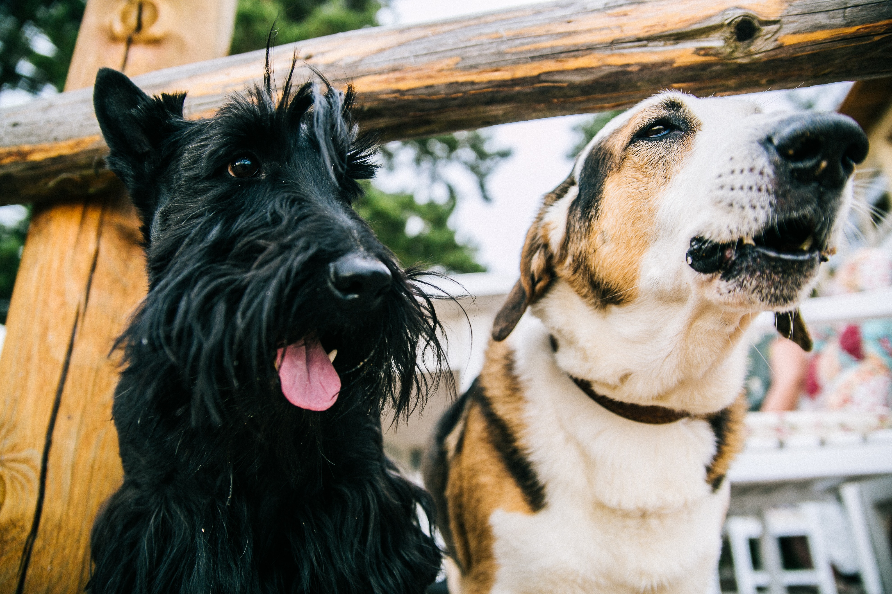

犬について
最も古い家畜で，1万年以上も前に家畜化されたと思われていますが，
原種はなんであるかよくわかっていません。
目的によって数多くの品種がつくられていて、
用途別に狩猟犬，番犬，牧羊犬，警察犬，家庭犬などに分けられますが，
今日では，多くのものは愛玩用として飼われています。
品種によって多少違いがありますが，妊娠期間は62日間で，
1回に2～16頭の子を産みます。子は生れたときは閉眼で，約10日で開きます。
約1ヵ月半で離乳し，約1年で成熟します。日本では，狂犬病予防法により，
飼育する際には保健所へ届け出ることが義務づけられています。
犬のコミュニケーション
犬たちは音声のほかに、耳や尾の動き、体の動きなどを用いて感情を表します。
感情の表出は同じメンバー間ではよく理解され、大きな闘争に至ることは少ないです。
犬の行動のうち顕著なものは、あちこちに尿をかけることです。
この尿によるマーキングは、雌より雄のほうが多く行います。
また、自分の行動圏内にある未知のものに対し、何度も繰り返し尿をかけたり、
変わったにおいのするものに体をこすりつけることもあります。
尿によるマーキングは、異性に対してはアピールの役目を果たし、
同性に対してはときに排他的になることもあります。
また、かぎなれないにおいに対し、自己のにおいを上塗りすることで、
それをなじみのあるにおいに変化させる効果もあります。

犬の感覚
犬の感覚のなかでは嗅覚が最も発達しています。
嗅覚は生後7日目ぐらいから働き始めます。
嗅覚の鋭さの判定は容易ではないですが、
塩酸や乳酸に対しては100万分の1の濃度でも
かぎつけるといわれています。
またスライドガラスについた人の指跡も、
もしそのガラスが室内に置かれていれば、
6週間後でもかぎ当てることができます。